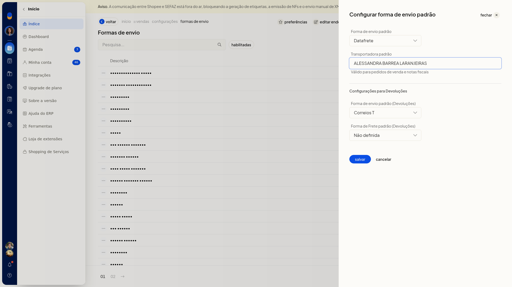

Definir a forma de envio padrão e o frete padrão de devoluções
Nas preferências de Formas de envio, você define a forma de envio padrão, a transportadora padrão e o frete padrão de devoluções. Essa configuração vale para pedidos de venda e notas fiscais.
Importante
- A preferência vale para pedidos de venda e notas fiscais.
- Em Transportadora padrão, use um transportador já cadastrado. Um nome que não existe no cadastro aparece como Cadastro não encontrado.
- Em Forma de Frete padrão (Devoluções), as opções são Não definida e as formas de envio para devoluções já cadastradas na conta.
Instruções
-
Acesse Configurações > Configurações ERP > Vendas > Formas de envio.
-
Clique em Preferências.

-
Em Forma de envio padrão, selecione Não definida ou uma forma de envio já cadastrada.
-
Em Transportadora padrão, busque um transportador já cadastrado.

-
Em Forma de Frete padrão (Devoluções), selecione Não definida ou uma opção de envio para devoluções já cadastrada.
-
Clique em Salvar. Para descartar a alteração sem gravar, clique em Cancelar.